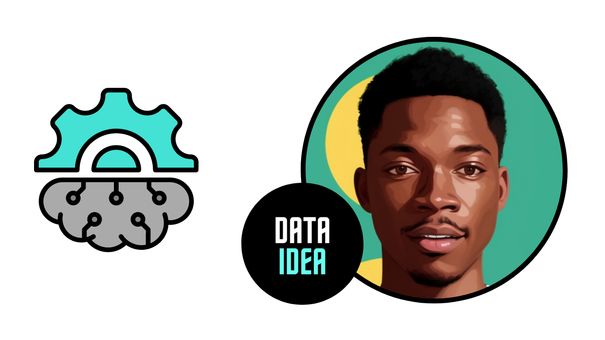
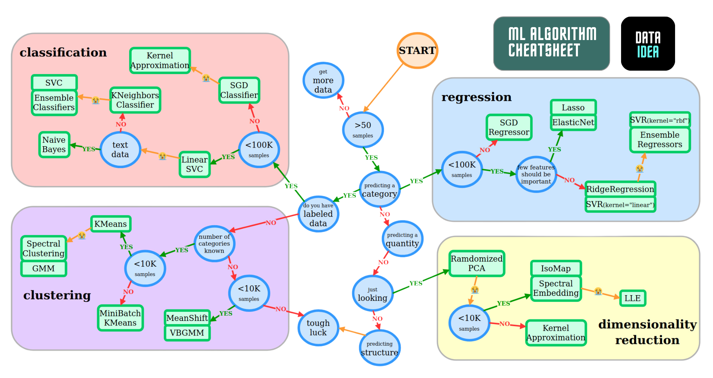
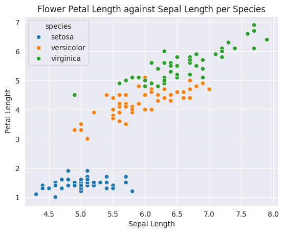
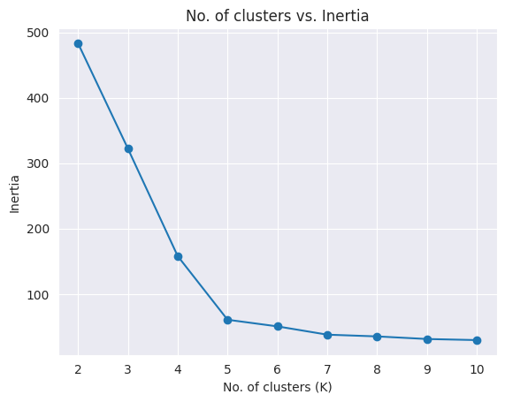

The following topics are covered in this tutorial:
- Overview of unsupervised learning algorithms in Scikit-learn
- Clustering algorithms: K Means, Hierarchical clustering etc.
- Dimensionality reduction (PCA) and manifold learning (t-SNE)
Let’s install the required libraries.
# # uncomment and run this cell to install the packages and libraries
# !pip install dataideaIntroduction to Unsupervised Learning
Unsupervised machine learning refers to the category of machine learning techniques where models are trained on a dataset without labels. Unsupervised learning is generally use to discover patterns in data and reduce high-dimensional data to fewer dimensions. Here’s how unsupervised learning fits into the landscape of machine learning algorithms(source):

Here are the topics in machine learning that we’re studying in this course (source):

Here’s a cheatsheet to help you decide which model to pick for a given problem. Can you identify the unsupervised learning algorithms?

Here is a full list of unsupervised learning algorithms available in Scikit-learn: https://scikit-learn.org/stable/unsupervised_learning.html
Clustering
Clustering is the process of grouping objects from a dataset such that objects in the same group (called a cluster) are more similar (in some sense) to each other than to those in other groups (Wikipedia). Scikit-learn offers several clustering algorithms. You can learn more about them here: https://scikit-learn.org/stable/modules/clustering.html
Here is a visual representation of clustering:

Here are some real-world applications of clustering:
- Customer segmentation
- Product recommendation
- Feature engineering
- Anomaly/fraud detection
- Taxonomy creation
We’ll use the Iris flower dataset to study some of the clustering algorithms available in scikit-learn. It contains various measurements for 150 flowers belonging to 3 different species.
import seaborn as sns
import matplotlib.pyplot as plt
from sklearn.cluster import KMeans
sns.set_style('darkgrid')
%matplotlib inlineLet’s load the popular iris and penguin datasets. These datasets are already built in seaborn
# load the iris dataset
iris_df = sns.load_dataset('iris')
iris_df.head()| sepal_length | sepal_width | petal_length | petal_width | species | |
|---|---|---|---|---|---|
| 0 | 5.1 | 3.5 | 1.4 | 0.2 | setosa |
| 1 | 4.9 | 3.0 | 1.4 | 0.2 | setosa |
| 2 | 4.7 | 3.2 | 1.3 | 0.2 | setosa |
| 3 | 4.6 | 3.1 | 1.5 | 0.2 | setosa |
| 4 | 5.0 | 3.6 | 1.4 | 0.2 | setosa |
# load the penguin dataset
sns.get_dataset_names()
ping_df = sns.load_dataset('penguins')
ping_df.head()| species | island | bill_length_mm | bill_depth_mm | flipper_length_mm | body_mass_g | sex | |
|---|---|---|---|---|---|---|---|
| 0 | Adelie | Torgersen | 39.1 | 18.7 | 181.0 | 3750.0 | Male |
| 1 | Adelie | Torgersen | 39.5 | 17.4 | 186.0 | 3800.0 | Female |
| 2 | Adelie | Torgersen | 40.3 | 18.0 | 195.0 | 3250.0 | Female |
| 3 | Adelie | Torgersen | NaN | NaN | NaN | NaN | NaN |
| 4 | Adelie | Torgersen | 36.7 | 19.3 | 193.0 | 3450.0 | Female |
sns.scatterplot(data=ping_df, x='bill_length_mm', y='bill_depth_mm', hue='species')
plt.title('Penguin Bill Depth against Bill Length per Species')
plt.ylabel('Bill Depth')
plt.xlabel('Bill Length')
plt.show()
sns.scatterplot(data=iris_df, x='sepal_length', y='petal_length', hue='species')
plt.title('Flower Petal Length against Sepal Length per Species')
plt.ylabel('Petal Lenght')
plt.xlabel('Sepal Length')
plt.show()
We’ll attempt to cluster observations using numeric columns in the data.
numeric_cols = ["sepal_length", "sepal_width", "petal_length", "petal_width"]
X = iris_df[numeric_cols]
X.head()| sepal_length | sepal_width | petal_length | petal_width | |
|---|---|---|---|---|
| 0 | 5.1 | 3.5 | 1.4 | 0.2 |
| 1 | 4.9 | 3.0 | 1.4 | 0.2 |
| 2 | 4.7 | 3.2 | 1.3 | 0.2 |
| 3 | 4.6 | 3.1 | 1.5 | 0.2 |
| 4 | 5.0 | 3.6 | 1.4 | 0.2 |
K Means Clustering
The K-means algorithm attempts to classify objects into a pre-determined number of clusters by finding optimal central points (called centroids) for each cluster. Each object is classifed as belonging the cluster represented by the closest centroid.

Here’s how the K-means algorithm works:
- Pick K random objects as the initial cluster centers.
- Classify each object into the cluster whose center is closest to the point.
- For each cluster of classified objects, compute the centroid (mean).
- Now reclassify each object using the centroids as cluster centers.
- Calculate the total variance of the clusters (this is the measure of goodness).
- Repeat steps 1 to 6 a few more times and pick the cluster centers with the lowest total variance.
Here’s a video showing the above steps:
Let’s apply K-means clustering to the Iris dataset.
from sklearn.cluster import KMeansmodel = KMeans(n_clusters=3, random_state=42)
model.fit(X)KMeans(n_clusters=3, random_state=42)In a Jupyter environment, please rerun this cell to show the HTML representation or trust the notebook.
On GitHub, the HTML representation is unable to render, please try loading this page with nbviewer.org.
KMeans(n_clusters=3, random_state=42)
We can check the cluster centers for each cluster.
model.cluster_centers_array([[ 6.85384615e+00, 3.07692308e+00, 5.71538462e+00,
2.05384615e+00, -8.88178420e-16],
[ 5.00600000e+00, 3.42800000e+00, 1.46200000e+00,
2.46000000e-01, 1.00000000e+00],
[ 5.88360656e+00, 2.74098361e+00, 4.38852459e+00,
1.43442623e+00, 2.00000000e+00]])We can now classify points using the model.
# making predictions on X (clustering)
preds = model.predict(X)
# assign each row to their cluster
X['clusters'] = preds
# looking at some samples
X.sample(n=5)| sepal_length | sepal_width | petal_length | petal_width | clusters | |
|---|---|---|---|---|---|
| 88 | 5.6 | 3.0 | 4.1 | 1.3 | 2 |
| 24 | 4.8 | 3.4 | 1.9 | 0.2 | 1 |
| 131 | 7.9 | 3.8 | 6.4 | 2.0 | 0 |
| 81 | 5.5 | 2.4 | 3.7 | 1.0 | 2 |
| 132 | 6.4 | 2.8 | 5.6 | 2.2 | 0 |
Let’s use seaborn and pyplot to visualize the clusters
sns.scatterplot(data=X, x='sepal_length', y='petal_length', hue=preds)
centers_x, centers_y = model.cluster_centers_[:,0], model.cluster_centers_[:,2]
plt.plot(centers_x, centers_y, 'xb')
plt.title('Flower Petal Length against Sepal Length per Species')
plt.ylabel('Petal Lenght')
plt.xlabel('Sepal Length')
plt.show()
As you can see, K-means algorithm was able to classify (for the most part) different specifies of flowers into separate clusters. Note that we did not provide the “species” column as an input to KMeans.
We can check the “goodness” of the fit by looking at model.inertia_, which contains the sum of squared distances of samples to their closest cluster center. Lower the inertia, better the fit.
model.inertia_78.8556658259773Let’s try creating 6 clusters.
model = KMeans(n_clusters=6, random_state=42)
# fitting the model
model.fit(X)
# making predictions on X (clustering)
preds = model.predict(X)
# assign each row to their cluster
X['clusters'] = preds
# looking at some samples
X.sample(n=5)| sepal_length | sepal_width | petal_length | petal_width | clusters | |
|---|---|---|---|---|---|
| 13 | 4.3 | 3.0 | 1.1 | 0.1 | 1 |
| 20 | 5.4 | 3.4 | 1.7 | 0.2 | 5 |
| 127 | 6.1 | 3.0 | 4.9 | 1.8 | 0 |
| 40 | 5.0 | 3.5 | 1.3 | 0.3 | 5 |
| 70 | 5.9 | 3.2 | 4.8 | 1.8 | 0 |
Let’s visualize the clusters
sns.scatterplot(data=X, x='sepal_length', y='petal_length', hue=preds)
centers_x, centers_y = model.cluster_centers_[:,0], model.cluster_centers_[:,2]
plt.plot(centers_x, centers_y, 'xb')
plt.title('Flower Petal Length against Sepal Length per Species')
plt.ylabel('Petal Lenght')
plt.xlabel('Sepal Length')
plt.show()
# Let's calculate the new model inertia
model.inertia_50.560990643274856So, what number of clusters is good enough?
In most real-world scenarios, there’s no predetermined number of clusters. In such a case, you can create a plot of “No. of clusters” vs “Inertia” to pick the right number of clusters.
options = range(2, 11)
inertias = []
for n_clusters in options:
model = KMeans(n_clusters, random_state=42).fit(X)
inertias.append(model.inertia_)
plt.title("No. of clusters vs. Inertia")
plt.plot(options, inertias, '-o')
plt.xlabel('No. of clusters (K)')
plt.ylabel('Inertia')Text(0, 0.5, 'Inertia')
The chart is creates an “elbow” plot, and you can pick the number of clusters beyond which the reduction in inertia decreases sharply.
Mini Batch K Means: The K-means algorithm can be quite slow for really large dataset. Mini-batch K-means is an iterative alternative to K-means that works well for large datasets. Learn more about it here: https://scikit-learn.org/stable/modules/clustering.html#mini-batch-kmeans
EXERCISE: Perform clustering on the Mall customers dataset on Kaggle. Study the segments carefully and report your observations.
Summary and References
The following topics were covered in this tutorial:
- Overview of unsupervised learning algorithms in Scikit-learn
- Clustering algorithms: K Means, DBScan, Hierarchical clustering etc.
- Dimensionality reduction (PCA) and manifold learning (t-SNE)
Check out these resources to learn more:
Credit
Do you seriously want to learn Programming and Data Analysis with Python?
If you’re serious about learning Programming, Data Analysis with Python and getting prepared for Data Science roles, I highly encourage you to enroll in my Programming for Data Science Course, which I’ve taught to hundreds of students. Don’t waste your time following disconnected, outdated tutorials
My Complete Programming for Data Science Course has everything you need in one place.
The course offers:
- Duration: Usually 3-4 months
- Sessions: Four times a week (one on one)
- Location: Online or/and at UMF House, Sir Apollo Kagwa Road
What you’l learn:
- Fundamentals of programming
- Data manipulation and analysis
- Visualization techniques
- Introduction to machine learning
- Database Management with SQL (optional)
- Web Development with Django (optional)
Best
Juma Shafara
Data Scientist, Instructor
jumashafara0@gmail.com / dataideaorg@gmail.com
+256701520768 / +256771754118